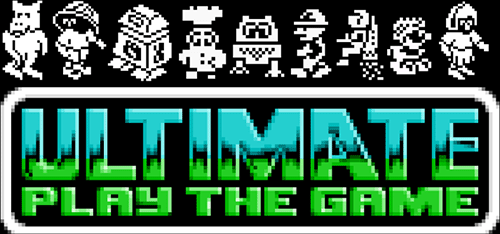
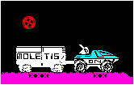

Mire Mare, Speccy Solar Jetman, Amiga Sabre Wulf, Lunar Jetman trailers - you name it, and sooner or later a rumour pops up somewhere.
Well, there's no smoke without fire (apparently), so here is my current take on the most persistent rumours and mysteries. If you have anything to add, please get in touch!
Mire Mare was the final part of the Sabreman trilogy that led from Underwurlde - the other two parts being Knight Lore and Pentagram. Both Underwurlde and Pentagram mention Mire Mire in their 'congratulations' screens.
Speculation about Mire Mare continues to this day. To the best of my knowledge, there is no Mire Mare snapshot anywhere - the game was never finished, let alone released, so nobody has an exclusive snap.
I'm hoping one day that I can persuade Leigh at Rare to find me a piece of artwork other than the cover artwork. Other than odd bits of graphic here and there, there are no bits of program code, snapshots, screen grabs or blurbs anywhere to be found. :-(
Having said that, I've heard that there was more of the game completed than Ultimate previously admitted to - so maybe a very primitive snap might be out there somewhere?
Courtesy of comp.sys.sinclair, we can clear this up a bit now, too. Basically, Solar Jetman was produced on the NES, by Rare, as we all know. Well, John Pickford's company (Zippo Games) actually did the programming (it was done by Steve Hughes, a partner in the company with John and his brother) for the NES version. (Zippo later became Rare Manchester, albeit briefly - cool or what!)
Versions were produced by Software Creations for the Spectrum, C64 and (incredibly) the Amiga. However, for reasons best left to the various softies themselves, these versions were not released. This is a real shame, as a Solar Jetman on the Amiga would be the closest to getting the god-like Ultimate dudes working on the most god-like machine ever (the miggy!).
Anyway, John Pickford recently found what might have been a backup of the Solar Jetman code, although he can't do anything with it as it belongs to Rare (doh!). He does claim that the Software Creations version for the Spectrum does actually exist, so sooner or later somebody ought to find it.... :-)
Finally, you simply must check out the Solar Jetman article on the great Crash! Online Archive site.
I've had other reports that The Sales Curve (now known as SCi) were doing a Solar Jetman for the Spectrum, to be released on their 'Storm' label. Anyone got anything more to add to this jumble of rumour?

From the Roger Kean interview with Chris & Tim Stamper:
Thanks to Matthew Wilson for the image!
"Was there ever a trailer in Lunar Jetman?" I asked.
After a cautious silence, Tim replied, "Well I never got far enough! I once saw a picture in a magazine with a trailer."
Yes, I told him, that was in CRASH. A reader sent it in, but obviously it was a hoax - or was it? I added that the graphics looked very authentic.
Tim merely laughed. "I wish they had contacted us!"
Krysalis software were apparently working on an Amiga conversion of Sabre Wulf - anyone have any screen shots, news snippets or even emulation files(!) of this fabled beast?
Apparently, some early work-in-progress screenshots were released for publicity purposes but so far I've been unable to trace any down.